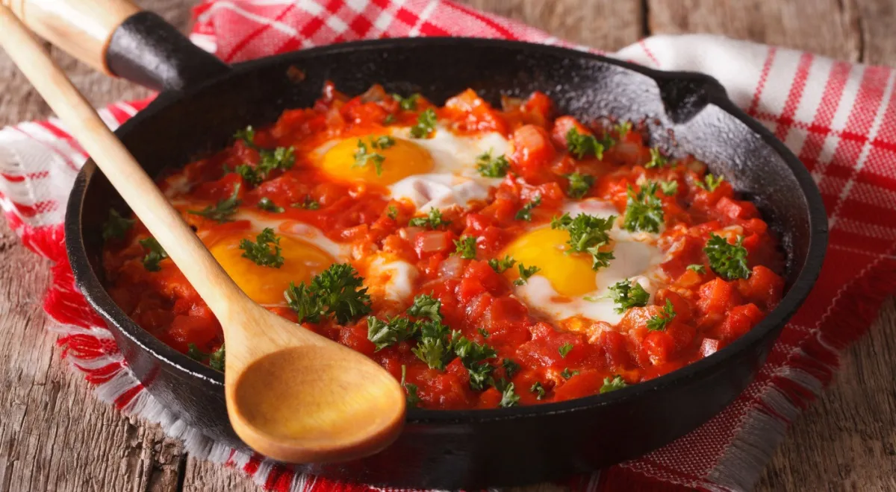

It usually starts with the same question: “What do you want to eat?”
No one knows. No one has a plan. We’re both hungry, probably tired, and somehow deciding what to cook feels harder than actually cooking it.
The fridge is full of random ingredients. Someone says, “We could make something.” Someone else says, “I don’t know.” And suddenly twenty minutes have passed and we’re still standing in the kitchen, waiting for a miracle.
But somehow, eventually, one of us cooks.
Sometimes it’s me. Sometimes it’s him. Sometimes it turns out surprisingly good.
Sometimes we quietly agree that we never need to make that again.
Over the years, we’ve cooked a lot of things — but somehow never remember what we made, how we made it, or whether we actually liked it.
So this site exists for exactly that reason.
A place for the meals we loved, the experiments we survived, the recipes worth repeating, and all the times we somehow managed to feed ourselves.
Current streak: still asking “What should we eat?” — but at least now we have a record.

опис страви
The guy who eats everything without complaining, ranks each dish in his head, and somehow always knows when the salt is off. You are the reason the kitchen smells good.